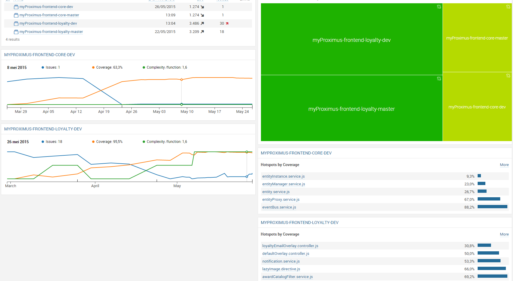

Unit Testing in AngularJS
Dennis Jaamann — Frédéric Ghijselinck
@dennisjaamann — @f_ghijselinck
CC Front-end & UX
Unit Testing in AngularJS
- Unit testing JavaScript
- Karma
- Unit testing frameworks
- QUnit
- Mocha
- Jasmine
- Unit testing AngularJS
- Controller
- Service
- Directive
- Coverage reports
Unit testing JavaScript
- Testing JavaScript is hard
- Mixed with HTML
- Inline scripts
- No real classes
- No real modules
- Feels like wrestling a king croc
Unit testing JavaScript - Pitfalls
- DOM interactions
- AJAX
- Event handlers
- Timeouts / Intervals
- Promises
- Basically everything asynchronous
Unit testing JavaScript - What do we need?
- Browser
- Test Runner
- Test framework
- Assertions (matchers)
- Ways to mock
- ...
Karma
Karma = unit test runner (by angular core team)
- configuration file
- test suites
- headless/real browser
Install karma
npm install karma
Automatically generate a config file
karma init
Karma
Config file
karma.conf.js
module.exports = function(config) {
config.set({
basePath: '../..',
frameworks: ['jasmine'],
autoWatch : false,
browsers : [ 'PhantomJS' ]
});
};
Simply run the test suite
karma start
PhantomJS
- Headless browser
- No GUI
- Tests run faster
- Only suited for unit tests, not integration tests
PhantomJS karma configuration
- Install PhantomJS launcher
npm install karma-phantomjs-launcher --save-dev
plugins : ['karma-jasmine', 'karma-phantomjs-launcher']
module.exports = function(config) {
config.set({
browsers : ['PhantomJS']
});
};
Unit testing frameworks
- Several options
- Qunit
- Mocha
- Jasmine
- All similar, choose your own flavor
- Karma supports all
Qunit
A minimal QUnit test setup:
<html>
<head>
QUnit Example
</head>
<body>
</body>
</html>
Qunit
The contents of tests.js
QUnit.test( "hello test", function( assert ) {
assert.ok( 1 == "1", "Passed!" );
});
Mocha
An example test
var assert = require("assert")
describe('Array', function(){
describe('#indexOf()', function(){
it('should return -1 when the value is not present', function(){
assert.equal(-1, [1,2,3].indexOf(5));
assert.equal(-1, [1,2,3].indexOf(0));
})
})
})
Jasmine
▪ test suite with specs:
describe("A suite", function() {
it("contains spec with an expectation", function() {
expect(true).toBe(true);
});
});
describe("A suite is just a function", function() {
var a;
it("and so is a spec", function() {
a = true;
expect(a).toBe(true);
});
});
Jasmine
setup & teardown
global functions:
- beforeEach()
- afterEach()
- beforeAll()
- afterAll()
Jasmine - Matchers
|
|
Jasmine - Spies
spyOn(foo, 'setBar');
it("tracks that the spy was called", function() {
expect(foo.setBar).toHaveBeenCalled();
});
- and.callThrough
- and.returnValue
- and.callFake
- and.throwError
- and.stub
Jasmine - Spies
describe("A spy", function() {
var foo, bar = null;
beforeEach(function() {
foo = {
setBar: function(value) {
bar = value;
}
};
spyOn(foo, 'setBar');
foo.setBar(123);
foo.setBar(456, 'another param');
});
it("tracks that the spy was called", function() {
expect(foo.setBar).toHaveBeenCalled();
});
it("tracks all the arguments of its calls", function() {
expect(foo.setBar).toHaveBeenCalledWith(123);
expect(foo.setBar).toHaveBeenCalledWith(456, 'another param');
});
});
Jasmine - Disable
disabling suites with xdescribe
xdescribe("A disabled suite", function() {
it("with a spec", function() {
expect(true).toBe(true);
});
});
disabling specs with xit
describe("A suite", function() {
xit("with a disabled spec", function() {
expect(true).toBe(true);
});
});
Jasmine - Exclusive Tests
run specific suites with ddescribe
ddescribe("An exclusive run suite", function() {
it("with a spec", function() {
expect(true).toBe(true);
});
});
run specific specs with iit
describe("A suite", function() {
iit("with a exclusive run spec", function() {
expect(true).toBe(true);
});
});
Unit testing AngularJS
- Angular = separation of concerns
- Create highly cohesive, low coupled pieces of functionality
- Easier to test
Unit testing AngularJS
- getting the module
beforeEach(module('app')); - injecting the controller
beforeEach(inject(function($controller, $rootScope) { controller = $controller; scope = $rootscope.$new(); }));
Unit testing AngularJS - Controller
'use strict';
anguler.module('app')
.controller('FakeController', function($scope, someRecords) {
$scope.someRecords = someRecords;
});
Unit testing AngularJS - Controller
describe("FakeController", function() {
var someRecords;
beforeEach(module('app'));
beforeEach(inject(function($rootScope, $controller) {
$scope = $rootScope.$new();
givenSomeRecords();
dependencies = {
$scope : $scope,
someRecords : someRecords
};
$controller('FakeController', dependencies);
});
it('when initialized', function() {
thenSomeRecordsAreOnScope();
});
function givenSomeRecords() {
someRecords = {
test : 'test'
};
};
function thenSomeRecordsAreOnScope() {
expect($scope.someRecords).toEqual(someRecords);
}
});
Unit testing AngularJS - Service
'use strict';
anguler.module('app')
.service('FakeService', function($http) {
this.getIsFake = function() {
return $http.get('fakeService/isFake');
};
});
Unit testing AngularJS - Service
describe('FakeService', function() {
var resolved;
beforeEach(module('app'));
beforeEach(inject(function(_$httpBackend_, _FakeService_) {
$httpBackend = _$httpBackend_;
FakeService = _FakeService_;
}));
it('Resolver returns resolved promise', function() {
givenMockIsFake();
whenGetIsFakeCalled();
thenPromiseIsResolved();
});
function givenMockIsFake() {
$httpBackend.expectGET('fakeService/isFake').respond(200, 'true');
}
function whenGetIsFakeCalled() {
FakeService.getIsFake().then(function(promise) {
resolved = true;
});
$httpBackend.flush();
}
function thenPromiseIsResolved() {
expect(resolved).toBeTruthy();
}
});
Unit testing AngularJS - Directive
'use strict';
anguler.module('app').directive('fixedPhoneNumberFormat', function() {
return {
scope : {
fixedPhoneNumberFormat : '@'
},
link : function(scope, element, attrs) {
attrs.$observe('fixedPhoneNumberFormat', function(fixedPhoneNumber) {
if (_.isEqual(fixedPhoneNumber.length, 8){
fixedPhoneNumber = "0" + fixedPhoneNumber;
}
element.text(fixedPhoneNumber.substring(0, 2)
+ " / " + fixedPhoneNumber.substring(2, 5)
+ " " + fixedPhoneNumber.substring(5, 7)
+ " " + fixedPhoneNumber.substring(7, 9));
});
}
};
});
Unit testing AngularJS - Directive
describe('FixedPhoneNumberDirective', function() {
var element = {};
var formattedFixedPhoneNumber;
beforeEach(module('app'));
beforeEach(inject(function($rootScope, _$compile_) {
$scope = $rootScope.$new();
$compile = _$compile_;
}));
it("formatfixedphonewithcode", function() {
givenTemplate();
givenFixedPhoneNumberWithNineDigits();
givenFormatFixedPhoneNumber();
whenFormatFixedPhoneNumber();
thenFixedPhoneNumberIsFormatted();
});
function givenTemplate() {
var template = '{{fixedPhoneNumber}}';
element = $compile(template)($scope);
}
function givenFixedPhoneNumberWithNineDigits() {
$scope.fixedPhoneNumber = "025021910";
}
function givenFormattedFixedPhoneNumber() {
formattedFixedPhoneNumber = "02 / 502 19 10";
}
function whenFormatFixedPhoneNumber() {
$scope.$digest();
}
function thenFixedPhoneNumberIsFormatted() {
expect(element.text()).toBe(formattedFixedPhoneNumber);
}
});
Coverage reports
- Karma can generate coverage reports
- Uses istanbul.js behind the scenes
- Multiple report types
- HTML
- LCOV
- Text
- Cobertura
Karma coverage configuration
- Add a preprocessor
preprocessors = {'**/lib/*.js': 'coverage'};
reporters = ['coverage'];
coverageReporter = {type : 'lcovonly',dir : 'coverage/'}
LCOV file example
TN:
SF:../app/scripts/app.js
FN:20,(anonymous_1)
FNF:1
FNH:1
FNDA:3,(anonymous_1)
DA:11,1
DA:21,3
LF:2
LH:2
BRF:0
BRH:0
...
LCOV Sonar integration
Resources
Thaaaaaaanks!
Dennis Jaamann — Frédéric Ghijselinck
@dennisjaamann — @f_ghijselinck
CC Front-end & UX